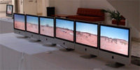

Report for the AUC Innovation Grant
High resolution displays using Apple hardware
Written by Paul Bourke
May 2007 - Dec 2008
Original proposal
Evaluating the creation of a single large digital canvas using Apple technology
The original proposal to the AUC Innovation grant round in 2007 targeted the identification
of capabilities/limitations of the Mac OS-X and related APIs to handle large pixel
displays. Particular attention was to be made of innovative display technology whether
it be high resolution, stereoscopic, or immersive displays.
Some examples of the types of questions asked are:
Which APIs could handle large images/textures (eg: in particular
images larger that texture sizes on graphics cards, 2048 or 4096 pixels).
The author is often interested in large format QuickTime movies, 2048 pixel wide
for XGA stereo, 2800x1050 pixel movies for SXGA+, 3840x1080 pixel movies for HD stereo,
and 2Kx2K movies for fisheye projection. Which are the best codecs for these unusually
large movie formats?
How does one drive large numbers of displays from a single Mac? What are the limits?
There are a number of possible benefits to AUC members of these display possibilities.
Visualisation of geometry rich datasets. These are datasets that one wishes to view in
their entirety in order to detect global structure but for which there is more data than
available pixels.
Viewing/inspection of high resolution images. For example geographic surveys,
Hubble deep field, and remote imaging. Such high resolution images are increasingly
common given the ongoing improvements in imaging CCD chips.
Immersive displays for virtual reality style environments/experiences. There are
applications of such environments for engaged learning and training.
Engaging displays for public education, artistic works, and entertainment.
Revised proposal
It soon became apparent that the original proposal was flawed, in the sense that a
detailed analysis was going to be almost immediately out of date. During the first 6 months
of the project there was the release of Leopard (the original proposal was based upon
Tiger), the QuickTime API went through some significant changes (and continues to do so
on a regular basis), there have been some improvements in the X11 and GLUT libraries, and
there have been releases/support for a number of new graphics cards. All of the above and
the expectation of ongoing change means that the proposed analysis which would occur at
a single point in time would quickly be out-of-date. In particular, any statement as to
limitations would similarly be dated.
The solution I suggest is to report on various solutions to various real world "novel"
projection projects I have been engaged in over the duration of the grant in the form
of case studies.
These demonstrate actual applications employing high resolution, stereoscopic, and immersive
projection environments all leveraging Mac OS-X technology. Readers are encouraged to
contact the author for more in-depth implementation details.
Case Studies
The first three case studies are exhibitions that occurred before this grant
was awarded. It was the questions raised here that prompted this study into how
to optimally drive novel or challenging displays using Apple hardware. The case studies listed
here illustrate various high resolution activities, test cases, that may extend the
graphics capabilities and thus reveal possible limitations. The lessons learnt here
may be of use to others contemplating something similar, the author is happy to discuss
any of the following further with interested parties.
|
Case study 1
Strange attractors, 2006. Four XGA resolution projections.
3.1 MPixels
|
|
|
Case study 2
Antarctica Virtua, 2007. Three XGA resolution stereoscopic projections.
4.7 MPixels
|
|
|
Case Study 3
Boolardy, March 2007. Two 30" Apple displays.
8.2 MPixels
|
|
|
Case Study 4
Sensis HMD, 8 displays, 4 per eye, total of 3200x1200 pixels.
3.8 MPixels
|
|
|
Case Study 5
WA Parliament, August 2007. Three 30" Apple displays, total display is 7680x1600 pixels.
12.2 MPixels
|
|
|
Case Study 6
Driving Sony 4K projector, Four HD (2048x1080) displays, total display is 4096x2160 pixels.
8.8 MPixels
|
|
|
Case Study 7
Driving HD (1920x1080) stereoscopic capable projector.
4.1 MPixels
|
|
|
Case Study 8
Ultra wide tiled display, multiple computers.
Uses network broadcast/receive in Quartz Composer 3.
13.8 MPixels
|

|
|
Case study 9
High resolution dome displays and navigable movies.
2 MPixels
|
|
|
Case study 10
Cosmology gallery, GinGin.
3.9 MPixels
|
|
|
Case study 11
Interactive player for extremely large panoramic images.
|
|
|
Case study 12, see also
tiled displays
8 x 30inch tiled display
32 MPixels
|
|
Software Developed
|
Warp mesh patch for Quartz Composer
The Quartz Composer patch discussed here warps an image (or movie) in an
arbitrary way as specified by a user generated mesh stored in a simple text
file. There are many potential applications for this but the motivation for
this capability arose from a very precise requirement, namely the warping of
images for projection into immersive spaces by using a projector and a spherical mirror.
|
|
|
Warp and navigable movie player
Warpplayer is an ongoing project that provides real-time warping of movies according
to a warping description saved in a simple text file, allows navigation within
fisheye, cylindrical, spherical, and planer movies, supports stereoscopic projection,
and a movie player that addresses some of the limitations with the Apple QuickTime player.
|
|